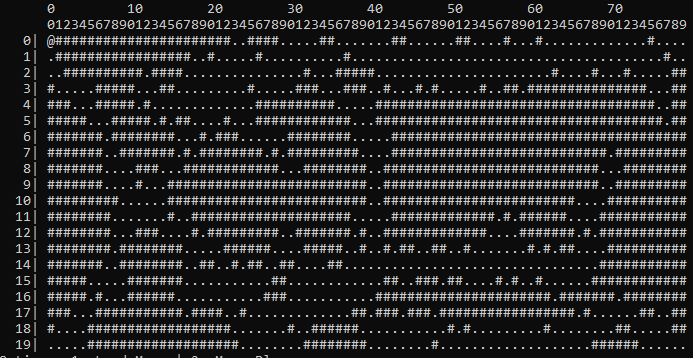

Personal Project
The goal of the project was to produce working A star pathfinding completely with my own code.
The foundations of this was to produce a grid to traverse and in order to do this I decided upon a simple three step method. Start with a grid of collisions marked with # symbols and draw a vague line from the top left to the bottom right, then top right to bottom left and finally just draw a few random lines in the middle. The result is as shown in the image, a random grid which occasionally has dead ends and often has alternative routes to the target.
The code shown is the vague drawing between two points. If I draw the line too well it’s not really a challenge, if it’s all random then the variance is huge. To fix this I have the loop which calls this send in its iterator and every other time it’ll head directly towards the target.
To make sense of the difference between targetDirection and randomDirectionNumber: targetDirection is the vague direction and can be found on the number pad, so of the target is to the top left targetDirection will be 9, randomDirectionNumber is a random direction and will only allowed if it’s not be moved in before or if it agrees with targetDirection.